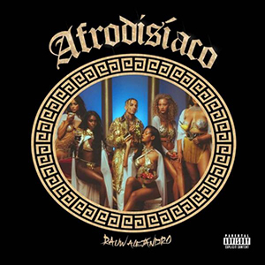
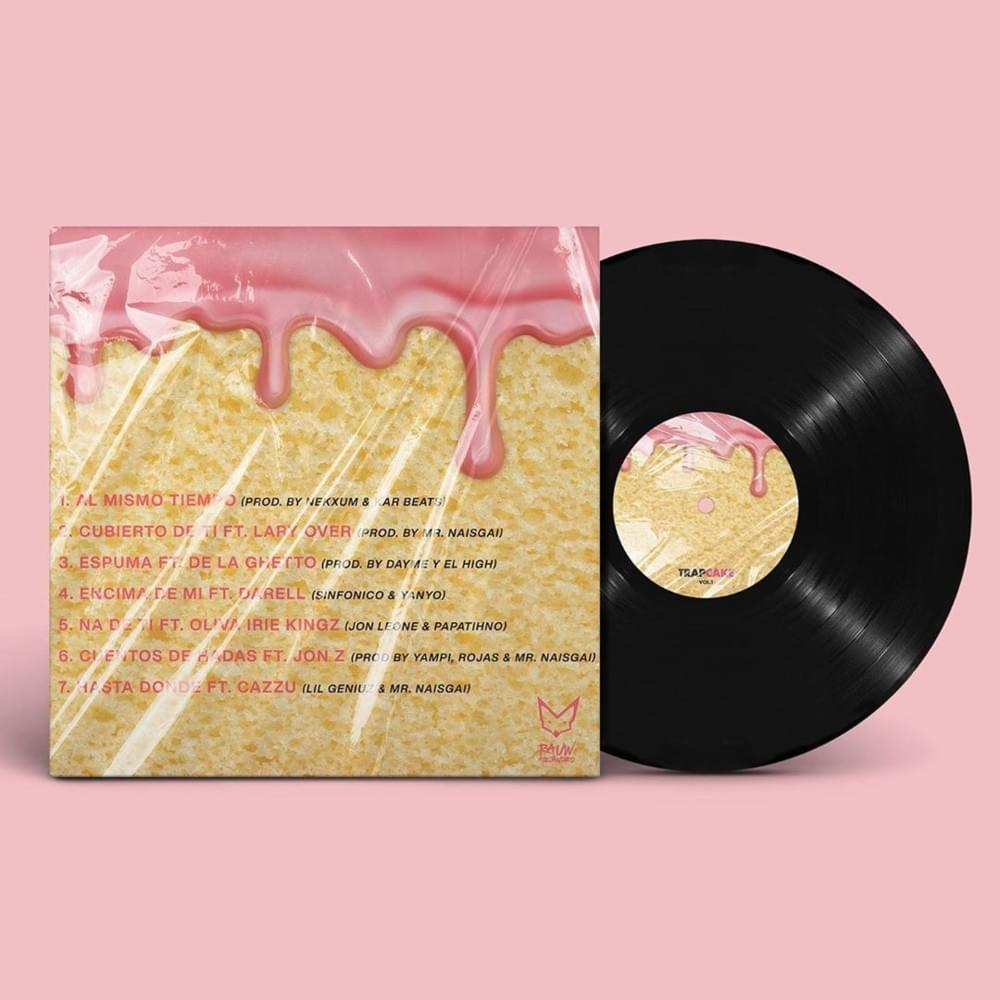
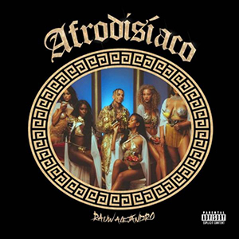
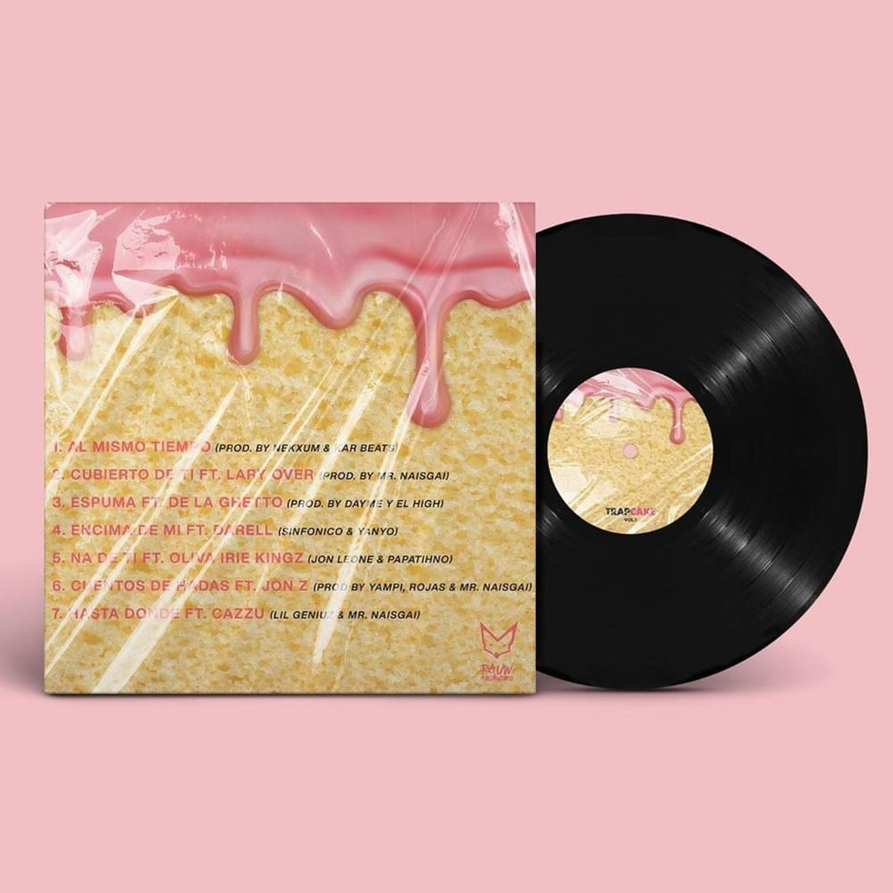

Discografia
- 2016: Punto De Equilibrio
- 2019: Trap Cake
- 2020: Afrodisíaco

 



Integrante
- Rauw Alejandro
Historia
Raúl Alejandro Ocasio Ruiz (Carolina, Puerto Rico; 10 de enero de 1993), más conocido por su nombre artístico Rauw Alejandro, es un rapero, cantante, compositor, productor discográfico y bailarín puertorriqueño. El 29 de mayo lanza Rauw Alejandro cautivó a una audiencia de más de un millón de personas alrededor de todo el mundo, con su impresionante espectáculo en vivo, que fue transmitido virtualmente desde el icónico Coliseo de Puerto Rico. Tras el gran éxito de esta transmisión y por demanda popular, el multi-talentoso artista decidió reforzar el impacto positivo que quiso enviar durante de esa noche especial, y le trajo a sus fanáticos el estreno de su nuevo álbum de canciones en vivo, Concierto Virtual En Tiempos de COVID-19 – Desde El Coliseo de Puerto Rico. El 26 de junio lanza su nuevo single "Algo Mágico", incorporando sonidos del género urbano con influencias del House y Pop contemporáneo.
Galeria